Liceo scientifico statale Leonardo da Vinci Genova
Classe: 3^A
Anno scolastico: 2016/2017
Progetto di alternanza scuola lavoro: Leo a Museo
Referente: Prof.ssa Silvia Canneva (Disegno e storia dell'arte)
Prof.ssa Maria Grazia Cerruti (Italiano e Latino)
Prof.ssa Ottavia Parodi (Inglese)
Storia del Palazzo
1643 - 1655
Stefano Balbi, membro della potente famiglia di commercianti ed imprenditori genovesi, commissionò agli architetti Pier Francesco Cantone e Michele Moncino la realizzazione dell'ultimo palazzo di via Balbi.
1679
I Balbi vendettero il Palazzo alla famiglia Durazzo. Eugenio Durazzo lo ampliò notevolmente, portandolo a 94 m di lato, per una superficie di circa 10.000 m2; questo venne reso possibile dall'incorporazione di un edificio accanto. In questa circostanza la maggior parte delle stanze venne decorata nuovamente.
1705
Vennero apportati dei cambiamenti grazie all'intervento dell'architetto Carlo Fontana, che, incaricato da Eugenio Durazzo, modificò il portale, l'atrio e gli scaloni. Sistemò inoltre anche la parte interna separando il cortile d'onore dal giardino e creando nuovi spazi verdi. Risale a questo periodo la realizzazione della nuova Galleria degli Specchi. Il Palazzo assunse l'organizzazione scenografica che in parte rimane tuttora.
1823
I Durazzo, per questione economiche, cedettero il Palazzo ai Savoia, che lo usarono come sede di corte (da questo l'attuale denominazione di "Palazzo Reale"). Con l'arrivo dei Savoia vennero effettuate ulteriori trasformazioni, inserendo la Sala del Trono e la Sala da Ballo.
1919
Vittorio Emanuele III cedette il Palazzo allo Stato Italiano.
1964
La realizzazione della sopraelevata comportò l'abbattimento del Ponte Reale voluto dai Savoia per unire il Palazzo alla Darsena.
2006
Il Palazzo divenne Patrimonio dell'Umanità.
Sale del Palazzo
- Vestibolo
- Battaglie
- Tempo
- Pace
- Del Veronese
- Sala degli specchi
- Non presente
- Non presente
- Galleria della cappella
- Non presente
- Del Trono
- Delle udienze
- Camera da letta del Re
- Bagno del Re
- Bagno della Regina
- Salottino giallo
- Salottino azzurro
- Camera da letto Regina
- Salotto della Regina
- Salotto di Diana
- Sala degli arazzi
- Salotto dell'aurora
- Sala da ballo
Sala delle udienze
Sala delle Udienze
Tra il 1830 e il 1840 la Famiglia Reale adattò alle proprie esigenze il piano di rappresentanza dei Durazzo. La Sala delle Udienze fu ricavata dall’unione di due salotti nel 1843: il muro divisorio venne abbattuto e sostituito da una volta. Il pavimento è riccamente decorato a tarsie lignee; tutte gli ornamenti risalgono al periodo sabaudo e sono in stile neobarocco, introdotto come sostituto di quello neoclassico. Le volte sono impreziosite da stucchi realizzati da Varese e Ghezzi, che incorniciano l’affresco di Giano mentre consegna le chiavi del Tempio della Guerra a Giove. Quest’ultimo, oltre ad avere scopo ornamentale, ha anche significato allegorico, infatti rappresenta la resa di Genova ai Savoia. Le tende sono in lampasso di seta e manifestano lo sfarzo tipico del periodo. Tre consoles con ripiano di marmo e specchio incorporato arredano la sala. Le poltrone sono in legno intagliato dorato e riportano il monogramma di Carlo Alberto, che viene ripreso anche dagli stucchi sul soffitto. In questa stanza si trovano inoltre un arazzo e diversi quadri, come il ritratto di Caterina Balbi dell’artista Anton Van Dick e “Il ratto di Proserpina” di Valerio Castello.
~ Martina Dufour
Ritratto di Caterina Balbi Durazzo
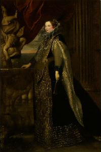Questo olio su tela raffigura Caterina Balbi Durazzo ed è di dimensioni molto grandi; fu commissionato dal suocero in onore del matrimonio del figlio con lei. Venne realizzato da Anton Van Dick, artista olandese che visse nella prima parte del 1600 e che ritrasse molti membri di famiglie abbienti della città. In questo quadro è rappresentata Caterina ventenne. Il viso è dolce, ma dallo sguardo sicuro; inoltre è da notare l’attenzione del pittore che, per far risaltare la carnagione estremamente chiara della ragazza, pone una rosa rossa a sinistra del volto. Il braccio destro poggia lungo la balaustra di una fontana con un putto e un delfino, mentre con l’altro braccio, che scorre lungo il fianco, Caterina stringe un ventaglio. Risaltano poi i gioielli, tra cui la collana con pendente d’oro e il fermacapelli diamantato. Il vero protagonista del dipinto è però, senza dubbio, il vestito; caratterizzato da una gorgiera di pizzo a lattuga e da un corpetto a punta, materiali pregiatissimi, era stato cucito su misura. Il valore degli abiti era così elevato che vestiti di questo genere si potevano indossare solo in occasioni speciali; se indossati in momenti non opportuni, si rischiava il “confino”, che costituiva una sorta di arresto domiciliare. Probabilmente il ritratto venne eseguito contemporaneamente al quadro che ritraeva il marito di Caterina, che è di dimensioni minori, ma colmo di dettagli che fanno pensare a una realizzazione congiunta. Stabilire che si trattasse realmente di Caterina Balbi Durazzo non fu immediato: infatti fino al 1900 ci si riferiva ad esso come al “Ritratto di dama in nero”. Solo nel XX secolo la figura femminile venne finalmente riconosciuta come Caterina Balbi Durazzo. Le condizioni di questo quadro furono per molto tempo disastrose, fino a quando, nel 1933, venne restaurato in modo da far riemergere i colori di un tempo. Nonostante il buon restauro, sono presenti lacune.
~ Martina Dufour
Il ratto di Proserpina

L'opera realizzata da Valerio Castello, è situata nella Sala delle Udienze e rappresenta il rapimento di Proserpina da parte di Plutone, il quale, trascinando la fanciulla con il suo carro, intende portarla nel suo regno, ovvero gli Inferi, per sposarla.
I personaggi principali sono Proserpina, figlia di Zeus e Demetra, e Plutone, dio degli Inferi e fratello di Zeus; i loro abiti hanno colori accesi, il rosso per Plutone e il blu per Proserpina. Il rosso dell'abito di Plutone e di quello di una fanciulla rappresenta il fuoco e, per traslato, diventa simbolo della passione: insieme ad altri colori caldi presenti è prevalente nel quadro. Il blu, invece, colore del cielo, dell'abito di Proserpina e di quello dell'altra giovane donna, sembra qui esprimere la lucidità e il terrore della fanciulla di Demetra ed occupa uno spazio più ristretto.
~ Xhesi Cukali
Arazzo sala delle udienze
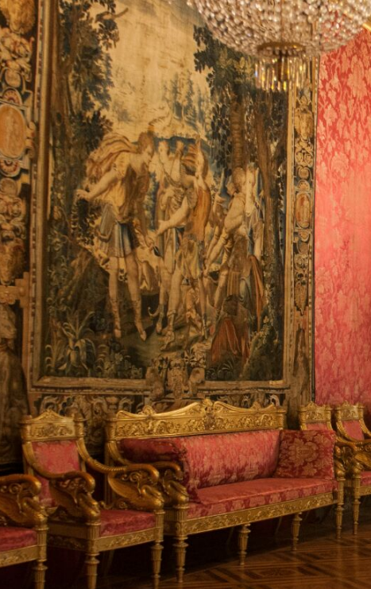L’arazzo della Sala delle Udienze raffigura Diana con Oto ed Efialte, due giganti che litigano perché vorrebbero entrambi, inutilmente, i favori della Dea. Questo arazzo, assieme a ‘’ l’Empietà di Niobe’’ e a ‘’Diana cacciatrice’’, è stato tessuto a Parigi agli inizi del Seicento nella cosiddetta boutique d’or, ovvero una delle più grandi manifatture appartenenti al complesso produttivo attivato nel 1607 da Frans Den Plank. L’origine parigina dei tre arazzi è confermata dai monogrammi e dalla marca lungo le cimose.
Il tessuto fa parte del ciclo delle ‘’Storie di Diana’’, tutte di manifattura parigina. I miti relativi a Diana erano stati scelti per illustrare una nota serie di panni, poi destinati al Castello di Anet.
Questo in particolare venne acquistato da Stefano Pallavicino assieme ad altri sei panni a Parigi e, dopo la sua morte, essi furono ereditati dalla nipote Maria Giovanna. Nel 1829 i sette arazzi furono presentati dai fratelli Gerolamo e Vincenzo alla mostra d’arte tenutasi appunto in quell’anno a Genova.
Fino agli inizi del Novecento il drappo ‘’Diana con Oto ed Efialte’’ era posto nella parte settentrionale della Sala degli Arazzi ,e solo successivamente fu spostato nella Sala delle Udienze.
L’arazzo in questione è caratterizzato da quattro cani da caccia agli angoli, e lungo i lati da cartelle contenenti medaglioni ovali monocromi. La decorazione lungo la ‘’cornice’’ è simmetrica, e ciò lo si può notare dalla posizione dei cani da caccia e dei medaglioni.
Come tutti gli arazzi, è formato da tessuti vegetali.
Tra le figure all’interno dell’ opera non vi sono iati e nessuno degli elementi costitutivi può essere isolato.
L’intero gruppo degli arazzi è importante per molti ragioni e soprattutto perché:
da un lato rappresenta un tassello per la conoscenza della tradizione parigina;
dall’altro, essendo di proprietà di una famiglia genovese, testimonia l’assoluta peculiarità del ceto dirigente della Repubblica.
~ Federico Bongiovanni
Galleria degli specchi
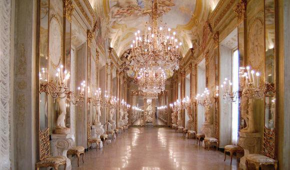Uno degli ambienti più suggestivi di Palazzo Reale è la Galleria degli Specchi, in puro stile barocco.
Commissionata da Eugenio Durazzo e realizzata tra il 1682 ed il 1685, si ispira alle Gallerie degli Specchi dei più famosi palazzi del tempo ed in particolare alla Galleria della Reggia di Versailles, presso Parigi.
Poiché è di dimensioni piuttosto modeste, per moltiplicare lo spazio, alquanto ridotto, viene sfruttato appunto il gioco di riflessi degli specchi stessi.
Lo scopo della galleria era duplice: ostentare l’enorme ricchezza della famiglia Durazzo attraverso il gran numero di specchi installati (all’epoca molto costosi) e dimostrare il loro raffinato gusto nell’allestimento dell’ambiente (si ricorda che all’epoca della sua realizzazione questo tipo di sala era considerato uno status symbol per ogni famiglia potente).
Gli affreschi che la abbelliscono, datati intorno al 1730, sono opera di Domenico Parodi; la sala è inoltre completata da una serie di statue, tra le quali quattro trattano il tema della metamorfosi ad opera di Filippo Parodi, e sulla parete di fondo si può ammirare “Il ratto di Proserpina” di Francesco Maria Schiaffino.
La sala voleva offrire un messaggio morale ai potenti che la frequentavano, contro i vizi che possono condurre alla rovina coloro che abbandonano la virtù.
Questo concetto è richiamato anche dai quattro quadri dei sovrani dell’antichità che si trovano, due per lato, alle basi delle arcate lungo le pareti laterali, sorretti ognuno da due sirene in stucco che ricordano divinità marine. Sulla parete d’entrata della sala stessa vengono infatti indicati i quattro grandi regni dell’antichità che sono caduti: Assiro, Romano, Persiano, Greco (che includeva tutta la parte a Oriente di Roma e quindi anche l’Egitto). Ognuno dei sovrani viene inoltre raffigurato al di sopra dell’allegoria dei due vizi che lo hanno contraddistinto nel corso del proprio regno.
~ Angelica Oblieght
Sardanapalo (Assurbanipal)
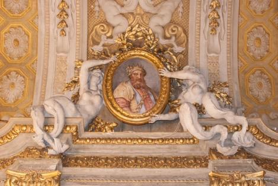Sardanapalo, ultimo re assiro (parete a destra dell’entrata) è raffigurato sopra due putti (dipinti come bassorilievi) che rappresentano rispettivamente la Libido (Lussuria) e la Crapula (Golosità). Il primo putto è seduto su di un coccodrillo con accanto una pernice, il secondo su di un maiale.
~ Angelica Oblieght
Tolomeo XIII
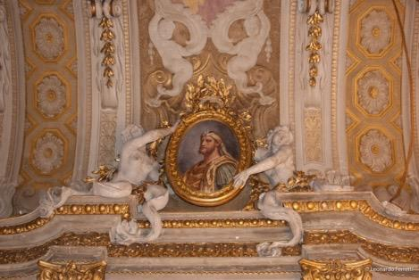Sulla stessa parete in fondo alla sala si trova il ritratto di Tolomeo XIII, ultimo re d’Egitto, a cui vengono associati i vizi di Ingratitudine e Rimorso (a causa dell’assassinio dell’amico Pompeo per entrare nelle grazie di Cesare). Il putto che simboleggia l’Ingratitudine tiene in mano due vipere, un maschio ed una femmina, ed un tralcio d’edera; il putto che rappresenta il Rimorso ha una serpe attorcigliata al braccio sinistro.
~ Angelica Oblieght
Romolo Augustolo
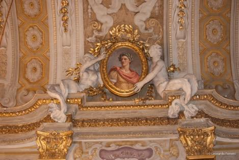Di fronte al quadro di Tolomeo XIII è collocato il quadro di Romolo Augustolo, ultimo re di Roma, a cui vengono associate Viltà e Pigrizia. Il putto che rappresenta la Viltà è seduto in una palude con accanto un’upupa ed un coniglio, il putto che simboleggia la Pigrizia è accomodato a braccia conserte su di un molle cuscino con accanto una tartaruga.
~ Angelica Oblieght
Dario l'ultimo re di Persia
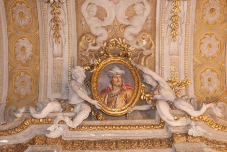Il quarto ed ultimo quadro (di fronte a quello di Sardanapalo) rappresenta Dario, ultimo re di Persia, a cui vengono associate l’Usurpazione e la Superbia. L’Usurpazione viene incarnata da un putto che fugge con una corona in mano, la Superbia da un fanciullo con in mano uno specchio ed accanto un pavone.
A completare l’allegoria, l’affresco al centro della volta che separa Sardanapalo da Dario rappresenta una donna su di un cammello, simbolo dell’Asia, continente di provenienza dei due sovrani, mentre nell’affresco al centro della volta che separa Tolomeo XIII e Romolo Augustolo troviamo una donna su di un toro, allegoria dell’Europa da cui i due sovrani provengono.
~ Angelica Oblieght
Il trionfo di Bacco
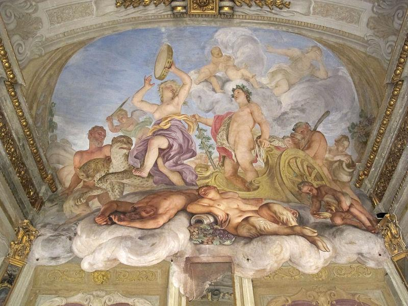La prima scena si svolge in uno spazio immaginario, sopra nuvole voluminose, in una terrazza semicircolare della quale si scorgono ai lati le balaustrate. Al centro c’è Bacco sul carro, mentre una Menade gli danza di fronte a seno scoperto, agitando nell'aria il timpano, strumento dei riti dionisiaci. Bacco è invece incoronato da un tralcio d'edera, pianta a lui sacra, e ha la compostezza classica di una statua classica. Entrambi esprimono una forte sensualità: il dio è nudo e solo in parte coperto da una pelle di leopardo; impugna una verga, antico simbolo di fertilità, con l'edera attorcigliata attorno al fusto. Il carro è dorato, tirato da due leopardi e mostra decorazioni con teste di rettili. In primo piano, adagiati su morbide nuvole, dormono un giovane e una satiresca, richiamo ai riti orgiastici e agli effetti del vino, quest'ultimo rievocato anche dall'uva che al centro fuoriesce da un vaso e dal putto che di lato versa il nettare in una coppa. In secondo piano satiri e menadi versano vino partecipando all'atmosfera dionisiaca della scena. La figura di Diana, sullo sfondo, nasconde il volto e sembra uscire di scena nauseata; questa scena va letta come simbolo della Castità che rifugge la Lussuria.
~ Chiara Panina
Taoletta di Venere
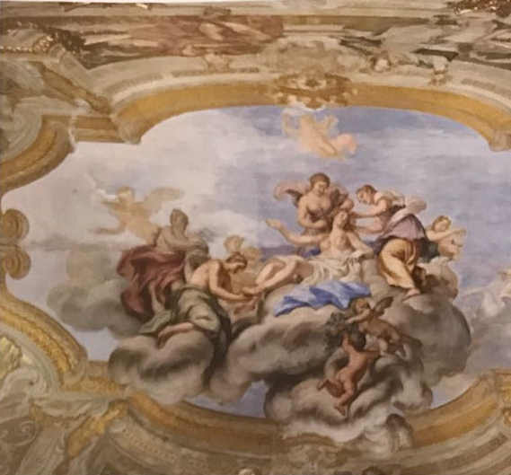Anche in “Toeletta di Venere” la composizione è immaginata dall'artista sullo sfondo del cielo, visibile da una maestosa apertura della volta: presenta al centro Venere adagiata sulle nubi, mentre due fanciulle le acconciano i capelli e una terza estrae da uno scrigno i gioielli; sono verosimilmente le Tre Grazie. Altre tre ninfe appaiono alla sua sinistra: una le allaccia í calzari, mentre un'altra sorregge un vaso dove bruciano profumi. Poco distante è un putto che si libra in volo. Sulla destra compare Cupido sul carro della dea tirato da due cigni (se ne scorgono la faretra e le frecce abbandonate alle spalle). Al tema amoroso fanno riferimento sia i due amorini che in basso, in primo piano, portano le rose, fiore sacro a Venere e simbolo dell'amor carnale, sia quello che in alto regge la torcia accesa, strumento atto a destare l'amore, ma anche emblema dell'ardore religioso. Deve trattarsi quindi, all'interno di un coerente disegno iconografico, dell’amor sacro, contrapposto a quello terreno.
~ Chiara Panina
Apollo e Marsia

Anche questo affresco è collocato in uno spazio semicircolare, speculare a quello della testata opposta. Al centro siede Apollo intento a suonare la cetra, caratterizzato dal tradizionale nodo sulla fronte. Sulla destra, mostrando le spalle all'osservatore, compare Marsia mentre suona la sua siringa, nella celebre contesa che Io vide contrapposto al dio. Attorno ai due stanno le nove Muse, che decreteranno la vittoria di Apollo. Tra le compagne del dio si riconoscono in primo piano la Musa della Tragedia con la spada e, sullo sfondo la Musa dell'Astronomia con il globo, mentre in piedi, alla sinistra di Apollo, con la tromba, sta la Musa della Musica. In alto due putti in volo stringono serpenti nelle mani, in riferimento ad un'altra vittoria di Apollo, quella su Pitone. La sfida di Marsia rappresentò dal Rinascimento in poi un'allegoria del conflitto tra intelletto ed emozioni e dunque rientra nel programma della galleria: Apollo, quale dio virtuoso, non si contrappone solo a Bacco, ma è colto nell'esplicita contesa contro il vizio e gli istinti irrazionali. Anche per questo si fa fatica a includerlo semplicemente tra le divinità "viziose" all'origine della caduta dei grandi imperi del passato.
~ Chiara Panina
Galleria della cappella
Il piano nobile presenta due aree differenti, quella delle camere da letto e dei bagni e quella dedicata a ricevimenti e feste, distinte anche per arredi e tappezzeria. La Galleria della Cappella costituisce la zona di transito tra l'una e l'altra. Questa galleria, che si affaccia su via Balbi, nel lato nord del palazzo, veniva chiamata anche "Gallerietta" per poterla distinguere più facilmente da quella degli Specchi, considerata più importante in quanto sfruttata per banchetti e maggiormente decorata. Sulla parete interna si apriva una porta che permetteva un accesso alternativo alla Sala da Ballo.
Nella galleria si possono ammirare due coppie di affreschi, in relazione tra loro, realizzati dal famoso pittore genovese Lorenzo de Ferrari: sulla parete meridionale si trova la coppia composta da "Il trionfo di Venere" e "L'incoronazione di Ercole", mentre sulle pareti perpendicolari sono rappresentati, uno di fronte all'altro, "Il ratto di Elena" e "La fuga da Troia".
~ Chiara Privitera
Il trionfo di Venere e l'incoronazione di Ercole
Gli affreschi della prima coppia sono raffigurati, grazie a un gioco di colori chiaro-scuro, come bassorilievi racchiusi entro una cornice, quindi come due grossi medaglioni. Ciascun medaglione è sostenuto da due sfingi affrescate alla sua base e adornato in cima da due putti, anch'essi affrescati. "Il trionfo di Venere" raffigura la dea sul suo carro nell'atto di incendiare con una torcia, insieme ad un putto, un globo, che simboleggia il mondo degli uomini acceso da guerre e conflitti. Il tema della guerra è ripreso anche da due colombe intente ad azzuffarsi. Alle spalle di Venere è raffigurato Marte mentre indossa la sua armatura. "L'incoronazione di Ercole" rappresenta il semidio seduto sul trono incoronato dalla Vittoria, che ha le sembianze di una giovane ragazza, dopo aver sconfitto Cerbero, Nemea e il gigante Anteo.
~ Chiara Privitera
Ratto di Elena e la fuga da Troia
Gli affreschi della seconda coppia sono raffigurati in modo che i soggetti appaiano come delle statue all'interno di nicchie. Nel "Ratto di Elena" viene rappresentata la causa dell'inizio della guerra di Troia, quindi Paride, Ettore e un servo che "rapiscono la moglie di Menelao". Ne "La fuga da Troia" viene raffigurata la fine della guerra, conclusasi con la fuga di Enea che porta in braccio il padre Anchise e viene affiancato da Ascanio, mentre si lasciano alle spalle la città distrutta e in fiamme. Una maggiore illusione di profondità viene conferita dall'aggiunta degli spigoli tridimensionali delle nicchie.
~ Chiara Privitera
Volta e sovrapporta
Nella volta della stanza, affrescata da Giovanni Battista Carlone nel 1655, riconosciamo in primo piano la figura di Giove su una nuvola, con in mano uno scettro e affiancato da un'aquila. Il dio indica alla Giustizia, rappresentata allegoricamente secondo l'iconografia tradizionale con la spada e la bilancia, la via verso la Terra a destra, lato in cui si scorge un gruppo di divinità, tra cui Giunone, subito dietro ad un pavone, animale che, secondo la simbologia romana, indicava la dea sposa di Giove.
Sempre da attribuire a Giovanni Battista Carlone è il sovrapporta rappresentante Ercole nell'atto di incatenare Cerbero; il semidio, coperto da una pelle di leone, cattura la belva con le sue sole forze per riportarla sulla terra.
In precedenza si pensava che quest'ultima rappresentazione appartenesse al figlio di Giovanni Battista, Giovanni Andrea Carlone, al quale invece va solamente riconosciuto il merito dei sovrapporta est e sud: nel primo riconosciamo una scena riguardante il supplizio di Prometeo che, come castigo voluto da Giove, è costretto a terra e tormentato da un'aquila che giornalmente gli mangia il fegato.
Nonostante in passato ci siano stati dei disaccordi, oggi abbiamo la certezza che il personaggio rappresentato sia Prometeo e non, ad esempio, Tizio (anch'esso tormentato da un rapace in un a maniera similare a quella di Prometeo) in quanto sullo sfondo possiamo notare, oltre alle caratteristiche che ci inducono a classificare l'uccello come un'aquila e non come un avvoltoio, causa della sofferenza di Tizio, dei bagliori di fuoco, che riportano al mito prometeico.
A rendere ulteriormente riconoscibile la figura di Prometeo è la scena raffigurata sul sovrapporta sud, in cui notiamo il dio infondere la vita ad una statua tramite una torcia infuocata.
È possibile che esistessero ulteriori affreschi inerenti al supplizio di Prometeo, che però sono probabilmente stati asportati a causa delle numerose e continue trasformazioni subite dalla stanza.
~ Giulia Podetti
Salotto della pace
Ritrovamento di Mosè nelle acque del Nilo
Il secondo panno riproduce la composizione più originale del Ciclo Vaticano, una sequenza di quattro sale che fanno parte dei Musei Vaticani chiamate “Stanze di Raffaello” perchè affrescate dal grande pittore e dai suoi allievi.
Il soggetto del panno sopracitato è copiato, anche se con lievi varianti, da una delle quattro scene della volta dell'ottava loggia, un ambiente celebre per un ciclo di affreschi della scuola di Raffaello, eseguita nel 1518 e assegnata al pennello di Giulio Romano.
In questo succo d'erba troviamo la rappresentazione di un episodio capitale dell'Antico Testamento.
Un gruppo di sei ancelle accompagna la figlia del faraone a bagnarsi nel Nilo e viene trovato sulle rive una cesta con Mosè in fasce al suo interno, che sarà quindi cresciuto nel palazzo del sovrano, ma svezzato dalla madre naturale Iochebed.
L'artista, per adattare la scena al formato diverso, rinuncia alla porzione sinistra della composizione originale invasa dal fiume, protagonista dell'invenzione raffaellesca e qui appena visibile, mentre sullo sfondo rimane il borgo turrito sopra la collina.
~ Gabriele Spilinga
Passaggio del Mar Rosso
Questo dipinto su seta, appartenuto alla famiglia Durazzo, venne realizzato da Giovanni Francesco Romanelli e si trova nel ‘Salotto della pace’.
L’opera si distingue dal resto della quadreria della reggia, in quanto è stata realizzata con una tecnica particolare, detta a “succo d’erba”.
Tale tecnica prevede l’utilizzo di pigmenti minerali e vegetali stemperati in un “medium” gommoso e stesi a pennello su un supporto costituito da gros-grain di seta il cui risultato è visibile sulla tela.
Quindi, anche se il dipinto imita la fastosità di un arazzo (vi è infatti la presenza di una raffigurazione centrale circondata da una cornice con funzione ornamentale), esso deve essere incluso nella categoria dei dipinti.
Il soggetto è costituito dall’attraversamento del Mar Rosso da parte degli Ebrei inseguiti dai soldati del faraone; al centro del dipinto si trova Mosè, che tiene in una mano il suo bastone mentre con l’altra cerca di calmare le acque.
Un particolare significativo del dipinto è dato dalla rappresentazione del cavallo situato nella parte in basso a sinistra dell’immagine: esso presenta infatti la stessa posizione e le stesse caratteristiche di un altro cavallo che compare nella colonna Traiana a Roma, come da immagine.
~ Michele Torazza
Stanza del tempo
La Stanza del Tempo deve il suo nome all’affresco che decora la volta, chiamato “La Verità svelata dal Tempo”. Si tratta di un’allegoria, ossia un’immagine che esprime un concetto; questo tipo di rappresentazione era in uso già dal XVI secolo e decorava spesso le dimore patrizie. Secondo la tradizione, l’affresco sarebbe stato eseguito tra la fine degli anni 30 e l’inizio degli anni 40 del Settecento da Domenico Parodi, importante esponente della produzione pittorica genovese di quel periodo, legato per oltre un decennio alla famiglia dei Durazzo. Tuttavia l’opera non pare nello stile di di questo autore che nel periodo di realizzazione dell’affresco sarebbe stato, tra l’altro, penalizzato dalla vecchiaia, ma di un altro artista: Jacopo Antonio Boni. L’unico modo per attribuire il dipinto a Parodi è immaginare una sua prima versione successivamente ridipinta da Boni. Al centro della scena c’è il Tempo, una figura alata coperta da un panno verde smeraldo che impugna una falce. La falce è l’attributo iconografico del personaggio, ossia l’oggetto che permette di identificarlo, mentre le ali indicano la rapidità del suo corso. Il personaggio vestito di bianco è invece la Verità che, solitamente rappresentata nuda, viene svestita dal Tempo e, poggiando un piede sul globo luminoso, dichiara la sua superiorità rispetto alle cose mondane. La Menzogna, presente in basso, smascherata, fugge con una maschera in mano. Nella parte inferiore si intravede la Pittura che, insieme ad Architettura e Scultura dipinte sulle pareti limitrofe, ci fa capire che perfino le arti maggiori sono assoggettate alla Verità. In particolare notiamo come l’artista abbia voluto dare maggior risalto alla Pittura poiché era considerata da lui la principale delle arti. Sono rappresentati alcuni tondi classici con i volti di Augusto, Antonio e Lepido, come esempio di verità e di ispirazione per gli artisti.
~ Sara Colleoni
Viaggio di Giacobbe

Il dipinto è stato realizzato da Gio Benedetto Castiglione, detto Grechetto (1609-1664). Questo pittore viene ricordato come "L'artista che dipinge i viaggi di Giacobbe". Il dipinto raffigura nella parte destra un cavaliere coperto unicamente da un mantello blu, scosso dal vento, che lascia intravedere la corporatura vigorosa. Monta un possente cavallo bianco e il viso è rivolto verso la parte opposta all'osservatore, cosicchè non se ne percepisce neanche il profilo. Si può notare solamente la massa scura creata dalla capigliatura e dalla barba. Il cavaliere tiene con la mano sinistra un lungo bastone dall'estremità ricurva. Al centro del quadro, in primo piano, è presente una catasta di sacchi e vasellame rappresentati dall'artista con realismo e la luce nitida contribuisce alla resa dei particolari. Nella parte sinistra del quadro notiamo un valletto che sta caricando un baule posto su un mulo, mentre dietro al cavaliere si intravedono due giovani con un turbante. Nel quadro ci sono due gruppi di animali, formati rispettivamente da pecore e da galline. Sullo sfondo è presente il cielo blu cobalto. Il dipinto è collocato nella Stanza del Tempo al di sopra dell'unica specchiera. Esso è posto di fronte al dipinto del "Diluvio", sempre realizzato dallo stesso artista. La forma di questi quadri è ottagonale e sono posti all'interno di una cornice di stucco della medesima forma. Il dipinto è stato ridimensionato due volte per soddisfare i requisiti elencati sopra.
~ Luca Cavalca
Cristo e l'adultera
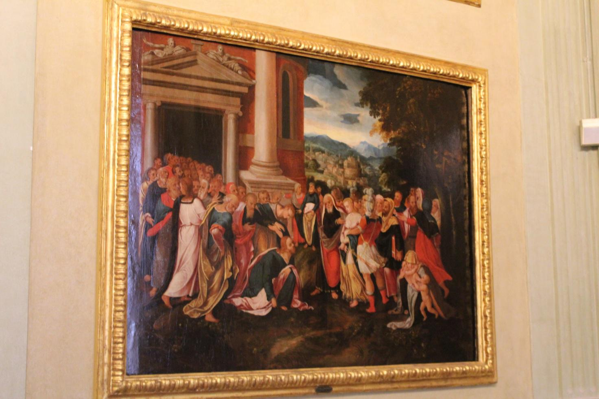Il Salotto del Tempo accoglie parte della collezione dei dipinti dei Durazzo, 23 tele incastonate alle pareti con armoniosa simmetria, tra le quali “Cristo e l’adultera”, che si trova sulla parete nord. Si tratta di un olio su tavola realizzato da un anonimo artista fiammingo della prima metà del XVI secolo. Rappresenta Gesù fuori dal tempio di Gerusalemme, immaginato come un edificio classicheggiante. Gesù è colto inginocchiato mentre scrive nella polvere, tenendo nella mano destra una pietra o della terra; guarda una donna che viene condotta in giudizio per aver commesso adulterio, raffigurata a capo chino e con tipiche vesti di una cortigiana elegante, circondata da guardie e da un uomo anziano. Gli scribi e i farisei chiedono a Gesù se la donna debba essere condannata a morte per lapidazione. Dietro a Gesù c’è un vecchio canuto con l’attributo delle chiavi, che sembra debba identificarsi in San Pietro, poiché ricorda la sua figura rappresentata nel Cenacolo leonardesco. In questo momento il Nazzareno sta dicendo la famosa frase: “Chi di voi è senza peccato, scagli per primo una pietra contro di lei.” Sul fondo al centro, immersa in un paesaggio verdeggiante, l’artista colloca una veduta di fantasia di Roma, di cui possiamo riconoscere alcuni monumenti.
La tavola cromatica è intessuta su accordi del rosso vermiglio, del giallo antico e del verde, con pennellate morbide che fanno trasparire le rifiniture di precisione. Non ci sono dati certi sulla storia remota del quadro: venne acquistato dai Durazzo nel ‘700 e fu descritto per la prima volta in un inventario del 1823. Nel 1907 De Foville attribuì l’opera a un anonimo artista fiammingo. Il supporto è costituito da due tavole di legno di pioppo, ma sui lati brevi si trovano delle aggiunte per far coincidere il dipinto con la cornice del Salotto del Tempo.
~ Giorgia Barilli
Salotto dell’Aurora
Il nome tradizionale del Salotto dell’Aurora deriva da un’interpretazione errata dell’affresco della volta, già identificato come “Le Nozze di Aurora e Cefalo”, mentre studi più recenti l’hanno riconosciuto correttamente come le Nozze di Flora (Dea della Primavera) e Zefiro (Dio del Vento). L’ambiente presenta dimensioni simili a quella della Sala del Tempo (5,64x 6,45). La sala dell’Aurora è connessa al terrazzo attraverso una portafinestra a sud, mentre a nord è collegata alla sala degli Arazzi. All’interno della stanza, rivolgendo lo sguardo a sud , sulla sinistra dove adesso si trova l’ascensore, prima si trovava un montacarichi. La spiegazione della presenza di quest’ultimo è data dal fatto che la stanza dell’Aurora era usata come sala da pranzo, spesso in occasioni di incontri politici.
~ Camilla Toscanini
Le nozze tra Zefiro e Flora
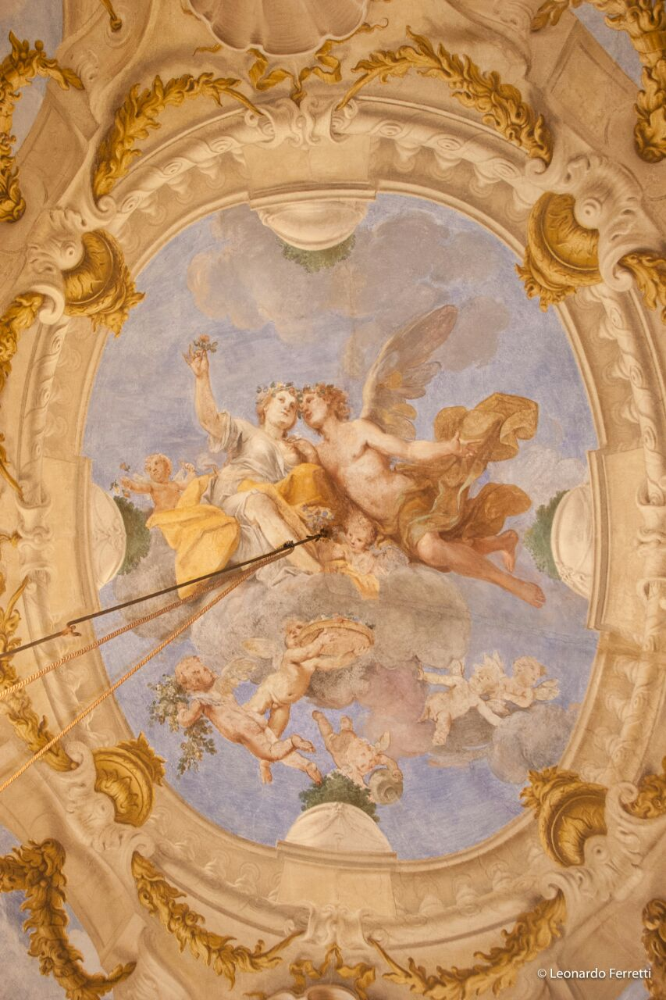Si tratta di un affresco della volta ed è stato realizzato da Jacopo Antonio Boni (1688-1766), che lo ha dipinto a secco e quindi risulta purtroppo in pessime condizioni di conservazione.
Lo sfondo dell’opera è un cielo azzurro con al centro una nuvola dove si trovano due giovani, rispettivamente Flora e Zefiro. Flora, dea della primavera, è la fanciulla che nella mano ha un fiore, una ghirlanda di fiori in testa e una veste bianca. Zefiro, un vento impetuoso, è il ragazzo alato, con una veste che gli copre la parte inferiore del corpo, che si dirige verso Flora . Attorno ai due giovani ci sono diversi putti, che sono bambini giocosi con piccole ali e ghirlande, uno dei quali versa una caraffa d’acqua. Negli angoli del soffitto sono rappresentate scene teatrali e musicali all’interno di balconcini, che sono stati dipinti prima dei putti a fresco: questo si nota poichè si può vedere il contorno del balcone attraverso le gambe di alcuni putti, che sono stati dipinti dopo a secco, essendo così più soggetti alla degradazione e alla perdita di colore. Nell’angolo a sinistra in alto rispetto al quadro è rappresentata una bella giovane che suona il liuto, accompagnata da putti che suonano il tamburello. Nell’angolo a sinistra in basso è presente un giovane flautista con un pappagallo e un putto con una ghirlanda. Nell’angolo a destra in alto si trova un giovane che dorme in bilico sull’orlo di un davanzale e un putto che vorrebbe svegliarlo, mentre un servitore gli fa segno di non farlo. Nell’angolo a destra in basso c’è una giovane che sparge fiori aiutata da un putto. Le decorazioni sono colonne dipinte circondate da foglie di alloro con dorature realizzate con tecnica dello stiacciato, che serve a dare illusione di profondità; ci sono anche mascheroni con sopra conchiglie per rappresentare fontane.
~ Pietro Gerbi
Transverberazione di Santa Teresa D'Avila
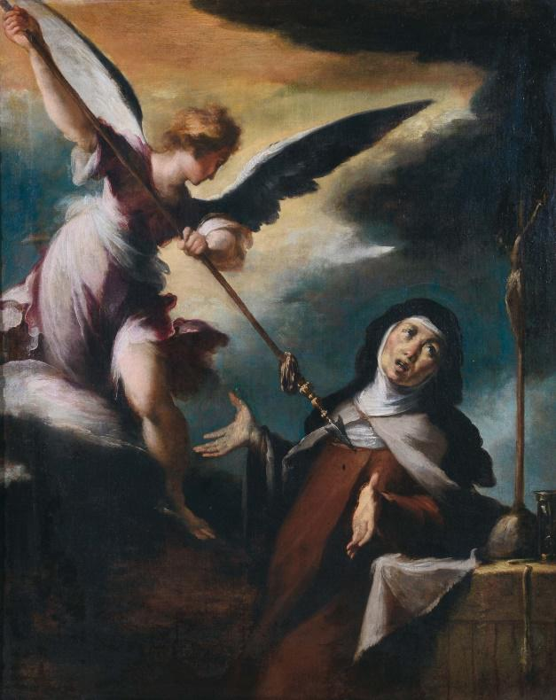Il dipinto è di Bernardo Strozzi (1614-1622), un olio su tela. Raffigura un angelo in alto a sinistra e in basso a destra Santa Teresa D’Avila. Non rappresenta qualcosa che sia accaduto realmente, ma un sogno della Santa, la quale narrava questi episodi nelle sue opere tra cui “La mia vita”. L’angelo si trova con le ali spiegate sopra una nuvola, nell’intento di trafiggere il cuore di Santa Teresa con una lunga lancia acuminata. Sembra essere astratto e quasi indifferente alla scena. I capelli dell’angelo, così biondi e lucenti, vengono posti in contrapposizione con il buio del dipinto. Anche il suo volto, luminoso e roseo viene messo in contrasto con quello della donna, ruvido e corposo. Inoltre il viso di Santa Teresa è rivolto verso l’osservatore, ma lo sguardo sofferente guarda un crocifisso appoggiato su una cassa di legno, in parte ricoperta dalla veste che indossa, quella delle Carmelitane. Le braccia della Santa sono aperte ed enfatizzano il dolore e la sua sofferenza. In basso a sinistra vi è un libro con sopra un teschio, un dettaglio poco visibile, ma significativo. La luminosità del quadro è “portata” dall’angelo, va da sinistra verso destra, mentre il resto del dipinto è piuttosto scuro, proprio per indicare l’incubo e la paura del soggetto principale.
~ Camilla Toscanini
Sala delle battaglie
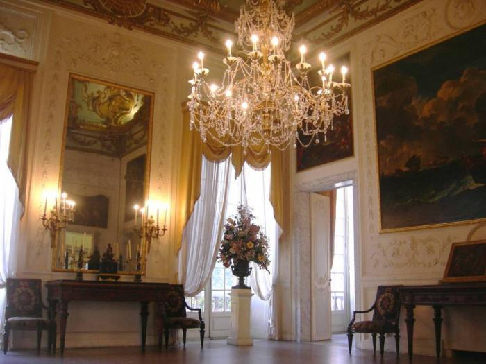La Sala delle Battaglie prende questo nome dalle due grandi tele raffiguranti battaglie navali. Nel ‘700 era nota come “salotto del Rubens“; qui erano esposti infatti due grandi dipinti del celebre artista fiammingo, opere fra le più prestigiose della collezione dei Durazzo. Alla prima metà del XVΙΙ secolo risalgono sia la decorazione in stucco dorato della volta (attribuita a Domenico Parodi o ad Antonio Haffner) sia i raffinati intagli delle porte. Gli stucchi chiari delle pareti, influenzati già dal gusto neoclassico, sono ascrivibili all’ultimo ventennio del secolo. L’arredamento è costituito da 4 consoles in legno di noce intagliato, da un ripiano in marmo Portoro. Inoltre vi possiamo ammirare una coppia di specchiere e una coppia di orologi con figure di cacciatore e pastore; un bronzo brunito in pietra nera, otto poltrone in legno di noce e una coppia di crateri.
~ Luca Bisio
Questo quadro, esposto nella Sala delle Battaglie, fu dipinto da Carlo Antonio Tavella intorno al 1720. Rappresenta la cruenta battaglia navale disputata tra gli Ottomani e i Maltesi al largo delle coste della Sicilia. Viene così ricordata la sfortunata disfatta di sette galee maltesi capitanate dall’ ammiraglio genovese Giovanni Battista Spinola.
La flotta maltese la mattina del 16 Febbraio del 1700, in rotta verso Messina per approvvigionamenti, intercettò un galeone tunisino; lo scontro che ne seguì rappresentò una delle sconfitte più cocenti per la storia navale dei difensori di Gerusalemme.
Il galeone dei maltesi, posto al centro dell’ opera si distingue per la bandiera rossa con croce bianca. Il veliero dei turchi è caratterizzato dalla bandiera a sfondo rosso con mezzaluna bianca, e da tre grandi alberi. Sul lato destro del dipinto è visibile la grossa falla sul fianco della nave nemica, segno di una forte collisione fra i due velieri. Guardando la poppa della nave maltese si può notare che sta affondando molto velocemente. Il cielo, veramente spettacolare, è solcato da voluminossimi cumuli con effetti di luce di notevole qualità. L’ atmosfera particolarmente cruenta della scena viene evidenziata dalla rappresentazione molto realistica del mare in burrasca e del forte vento che gonfia le vele del maestoso galeone ottomano. Sullo sfondo, dietro alle numerose nuvole, si nota una potente luce proveniente dalla parte sinistra del dipinto, e questo può alludere al fatto che la tempesta stia per terminare.
~ Lorenzo Clivio
Stanza non disponibile
Fotografie
Opere 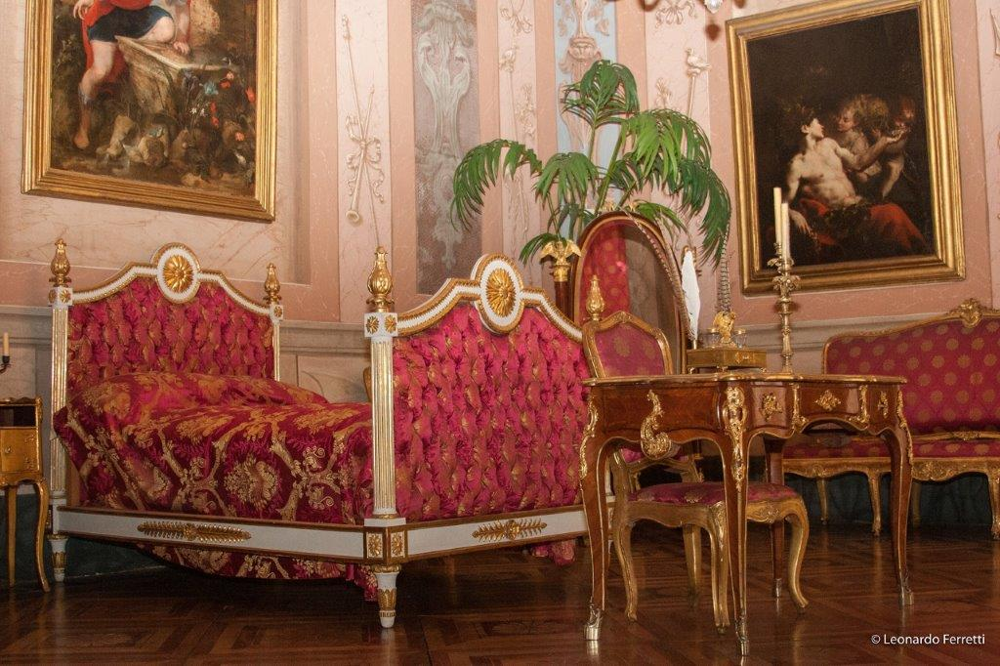
Guide 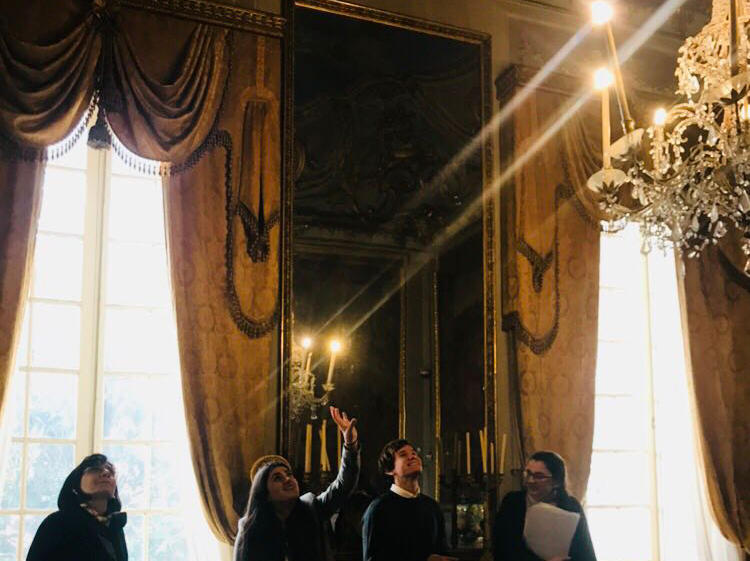
Autori

Contattaci
Via Balbi, 10, 16126 Genova
010 271 0236

palazzorealegenova@beniculturali.it
Orari apertura:
- Dal Martedì al Sabato 9-19
- Domenica 13:30-19:00
- Lunedì chiuso